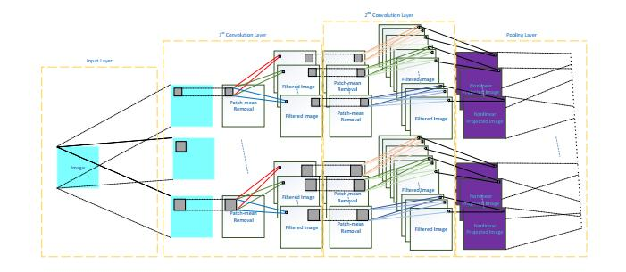

I am a research assistant of Pattern Recognition & Intelligent System Lab at Beijing University of Posts and Telecommunications under the supervision of Prof. Weihong Deng. Recently, my research focus is on face recognition under varying conditions.
December 14, 2015: My presentation on IEEE VCIP is available now. Here is the recorded slideshow.
December 7, 2015: Submitted a manuscript for TPAMI as co-author.
October 18, 2015: Awarded Qualcomm Scholarship for Innovation and Entrepreneurship for my outstanding contributions in the project "Chip Bank"(vedio).
September 7, 2015: Two papers have been accepted in ACPR2015, one of which is accepted as Oral.
August 15, 2015: One paper has been accepted as Oral in VCIP2015.
July 31, 2015: One paper has been accepted in CCBR2015.
June 15, 2015: My project "Chip Bank"(vedio) has been awarded first prize in the 7th Undergraduate Innovation Forum and Exhibition.
February 9, 2015: My first paper has been accepted in FG2015.
Publications
S.Li, Y.Tu, W.Deng, and J.Lu. Noise-resistant Local Binary Pattern based on Random Projection
In: Asian Conference on Pattern Recognition (ACPR), 2015.
[ paper ] Provide a novel local descriptor which maintains the simple of LBP and obtains excellent robustness towards noise.
S.Li, and W.Deng. Face Recognition based on Random Feature
In: Visual Communication and Image Processing Conference (VCIP)2015 (Oral).
[ paper ] Combine Bag-of-word model and random feature in face recognition. The system processes outstanding noise-resistant capability.

Y.Wang, S.Li, J.Hu, and W.Deng. Face Recognition Using Local PCA Filters
In: Chinese Conference on Biometic Recognition (CCBR)2015
[ paper ]
J.Li, S.Li, J.Hu, and W.Deng. Simultaneous Blurred Face Restoration and Recognition
In: Asian Conference on Pattern Recognition (ACPR)2015 (Oral).
[ paper ]
J.Li, S.Li, J.Hu, and W.Deng. Adaptive LPQ: an Efficient Descriptor for Blurred Face Recognition
In: Automatic Face and Gesture Recognition (FG)2015.
[ paper ]
Awards
2015
Qualcomm Scholarship for Innovation and Entrepreneurship (rank 8 of 595)
Meritorious Winner in American Interdisciplinary Contest In Modeling (top 7% of 9773)
Active Students in Art and Physical Activities
2014
National Scholarship for Motivation (rank 9 of 629)
First prize in Beijing Division on "China Undergraduate Mathematical Contest in Modeling" (top 5% of 2,679)
Third prize in Beijing Division on "National Undergraduate Mathematical Contest" (top 15% of 30,000)
Outstanding Student leaders of University
Team champion on "Huacai Beiyou" Debate Competence (rank 1 of 19)
National first prize on "CCTV STAR OF OUTLOOK English Talent Competition" (rank 1 of 123)